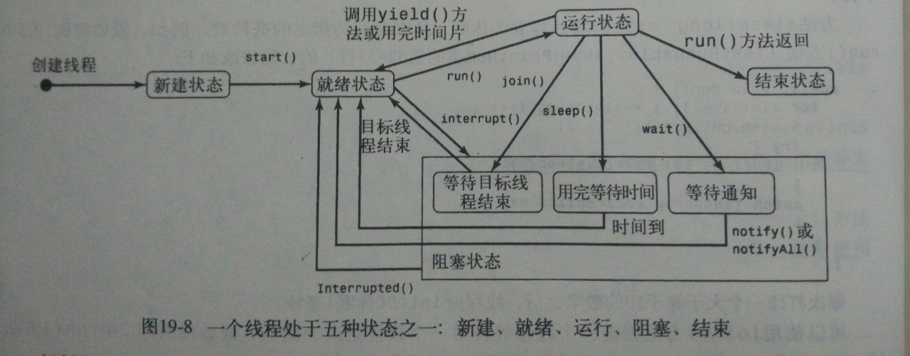

本文总结源自《Java语言程序设计》原书第五版，作者为Y.daniel Liang，习题及编程练习均参照此书。
主要内容
Java支持多线程（multithreading）。多线程是指在一个程序中允许同时运行多个任务的能力。
线程的概念
一个线程（thread）是指程序中完成一个任务的有始有终的执行流。使用Java，可以在一个程序中并发的运行多个线程。- 多线程可以使程序反应更快，交互性更强，执行效率更高。
- Java对多线程程序的开发和运行提供了非常好的支持，包括锁定资源以避免冲突。
- 每个新线程都是一个对象，它的类实现
Runnable接口或者扩展实现了Runnable接口，这种新对象称为可运行对象（runnable object）。
创建线程的两种方式
扩展Thread类创建线程
|
|
实现runnable接口创建线程
实现接口：
123456class RunnThread implements Runnable {public void run {//do something}}创建线程：
12Thread t = new Thread(new RunnThread());t.start();如果用户线程要实现多继承，应该选择实现Runnable接口这种方式。
线程的控制与通信
- Thread类中提供的控制线程的方法：
- start()
- interrupt() 中断该线程。如果该线程处于阻塞状态，它就进入重新运行的就绪状态
- isAlive() 该方法判断线程是否正处于运行状态
- setPriority(int p)
- join() 等待该线程结束
- sleep(long millis)
- yield() 让该线程暂停执行，允许其他线程开始运行
- isinterrupted()
- currentThread() 返回当前正在运行的线程对象的引用
Thread类还包含stop()、suspend()和resume()。但是这些线程具有内在的不安全因素，因此不建议使用。要替代stop()方法，可以给线程变量赋值为null，指明要停止它的运行。
- 方法wait()、notify()、notifyAll()定义在Object类中，也可以用于促进活动线程之间的通信。
- wait() 该方法强迫线程等待，直到对调用wait方法的对象调用notify或notifyAll方法。
线程的状态
- 线程有五种状态：新建、就绪、运行、阻塞或结束。
 - 有几种原因会使线程进入
阻塞状态（Blocked state）：- 可能是它自己调用了join()、sleep()或wait()方法
- 可能是其他方法调用了如上方法
- 可能是该线程在等待一个I/O操作的完成
- 方法interrupt按下列方式中断一个线程：当线程处于就绪状态或运行状态时，给它设置一个中断标志；当线程处于阻塞状态时，它将会被唤醒并进入就绪状态，同时抛出异常java.lang.InterruptedException。即：中断不仅打断执行过程，也可以打断不执行过程。
线程的优先级
- Java给每个线程指定一个优先级。
- Thread类有int型常量MIN_PRIOTITY、NORM_PRIORITY和MAX_PRIORITY，分别代表1、5、10、主线程的优先级是Thread.NORM_PRIORITY。
如果总有一个优先级较高的线程在运行，或者有一个相同优先级的线程不退出，那么一个线程可能永远也没有运行的机会。这种情况称为竞争（contention）或资源缺乏（starvation）状态。
线程组
- 一个
线程组（thread group）是线程的一个集合。可以同时对一个线程组进行唤醒和挂起操作。 - 可以把一个线程组添加到另一个线程组，构成一个树形结构，除了起始组以外，树中的每个线程组都有一个父线程组。
- 每个线程都属于一个线程组。
- 线程组的创建： 12ThreadGroup g = new ThreadGroup("thread group"); //组名必须是唯一的字符串Thread t = new Thread(g,new ThreadClass(),"label for the thread");
线程组里的线程必须分别启动
线程之间的同步与协作
多个线程同时访问一个共享资源会引起资源冲突（race condition）。如果一个类的对象在多线程程序中没有引起资源冲突，则称这样的类为线程安全的（thread-safe）。
同步化实例与静态方法
- 为避免资源冲突，应该防止多个线程同时进入程序的某一特定部分，程序中这样的部分称为
临界区（critical region）。 - 可以使用关键字
Synchronized来使方法的通信同步，以便一次只有一个线程可以访问该方法。 - 一个同步方法在执行前需要加锁：对于实例方法，要给调用该方法的对象加锁；对于静态方法，要给这个类加锁。
同步语句
当执行方法中某一个代码块（也成为体）时，同步语句不仅仅可以用于获准给该对象加锁，而且可以用于要求对任何对象加锁。这个代码块称为
同步块（synchronized block）。123synchronized (expr) { //表达式expr必须能求出对象的引用语句组；}同步语句允许对任何对象加锁，所以可以同步地访问一个对象而不仅仅是一个方法。
任何同步的实例方法都可以转化为同步语句。
123public synchronized void xMethod() {//方法体}上述代码等价于：
12345public void xMethod() {synchronized (this) {//方法体}}
线程之间的协作
- 通过在临界区上多个线程的相互排斥，线程同步完全可以避免资源冲突的发生，但是有时候我们还需要线程之间的相互协作。
- wait、notify和notifyAll方法可以用来实现线程之间的相互通信。这些方法必须在同步方法中调用，或者在接受这些方法的对象的同步块中调用；否则会抛出异常
IllegalMonitorStateException。
死锁
- 使用一种名为
资源排序（resource ordering）的简单技术可以轻易的避免死锁的发生。该技术是给每一个需要锁定的对象定义一个顺序，确保每个线程都按这个顺序来锁定对象。
进程条JProcessBar
- 进程条JProcessBar是一个图形组件，用来以图示的方式显示有界区间内的一个值。
- 进程条的常用属性有orientation、minimum、value和maximum等。
复习小结
- 线程对象从来不会直接引用run方法，到了执行某个线程的时候，Java虚拟机调用该线程的run方法。
编程练习
习题19.2 19.3 19.4 19.6 19.7 19.8 19.9 19.11源代码见我的Github： chapter19
习题19.7要求使用同步集合解决习题19.6多线程出现异常java.util.ConcurrentModificationException的问题。当完成这个题并且多次执行时，会出现下面这个问题，暂时不知道是否是错误：
向规则集添加数字时使用如下语句：1hashSet.add(((int) (Math.random() * 10)) + 1);控制台输出为以下结果：
123456789101112131415161718192021222324252627282930Thread-0Thread-17Thread-0Thread-117Thread-0Thread-117Thread-0Thread-1178Thread-0Thread-1178Thread-0Thread-11478Thread-0Thread-1...也就是说，随机数在规则集内被重新排序了，并且在使用迭代算子遍历时被打印到控制台。排序的原因猜测是同步规则集的方法导致的：
1Collections.synchronizedSet(hashSet);习题19.9要求写一个死锁程序，形成死锁的条件如下：
互斥条件。即某个资源在一段时间内只能由一个进程占有，不能同时被两个或两个以上的进程占有。这种独占资源如CD-ROM驱动器，打印机等等，必须在占有该资源的进程主动释放它之后，其它进程才能占有该资源。这是由资源本身的属性所决定的。如独木桥就是一种独占资源，两方的人不能同时过桥。
不可抢占条件。进程所获得的资源在未使用完毕之前，资源申请者不能强行地从资源占有者手中夺取资源，而只能由该资源的占有者进程自行释放。如过独木桥的人不能强迫对方后退，也不能非法地将对方推下桥，必须是桥上的人自己过桥后空出桥面（即主动释放占有资源），对方的人才能过桥。
占有且申请条件。进程至少已经占有一个资源，但又申请新的资源；由于该资源已被另外进程占有，此时该进程阻塞；但是，它在等待新资源之时，仍继续占用已占有的资源。还以过独木桥为例，甲乙两人在桥上相遇。甲走过一段桥面（即占有了一些资源），还需要走其余的桥面（申请新的资源），但那部分桥面被乙占有（乙走过一段桥面）。甲过不去，前进不能，又不后退；乙也处于同样的状况。
循环等待条件。存在一个进程等待序列{P1，P2，…，Pn}，其中P1等待P2所占有的某一资源，P2等待P3所占有的某一源，……，而Pn等待P1所占有的的某一资源，形成一个进程循环等待环。就像前面的过独木桥问题，甲等待乙占有的桥面，而乙又等待甲占有的桥面，从而彼此循环等待。
根据这个原则，代码如下：
12345678910111213141516171819202122232425262728293031323334353637383940414243444546474849505152public class $19_9 {public static void main(String[] args) {DeadThread t1 = new DeadThread();DeadThread t2 = new DeadThread();t1.flag = 0;t2.flag = 1;t1.start();t2.start();}}/*** 线程1锁定o1后休眠1s，使得有机会执行线程2，线程2锁定o2后，等待线程1释放o1，线程1此时锁定了o1，等待线程2* 释放o2，形成死锁。**/class DeadThread extends Thread {int flag = 0;static Object o1 = new Object(), o2 = new Object();public void run() {if (flag==0) {System.out.println("flag=" + flag);synchronized (o1) {try {Thread.sleep(1000);} catch (InterruptedException e) {e.printStackTrace();}synchronized (o2) {System.out.println("o2 locked");}}}if (flag==1) {System.out.println("flag=" + flag);synchronized (o2) {try {Thread.sleep(1000);} catch (InterruptedException e) {e.printStackTrace();}synchronized (o1) {System.out.println("o2 locked");}}}}}